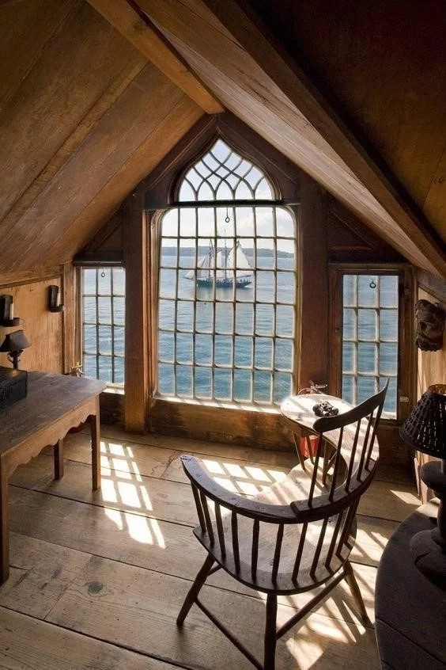

Nautical Interior Designing Style
This type of design inside your home will depict a positive wave.
You will get an image of warm and relaxing view.
The nautical décor has examples from cottage or coastal style decor.
Normally, the designers put the foundation of sand color or white color.
The experts also put a touch of blue. Since the theme is of coastal, the decorative materials used here are jute ropes, sailboats, seashells in clear jar, navigation map etc.
The designer uses wood in unfinished form to bring a natural view.
